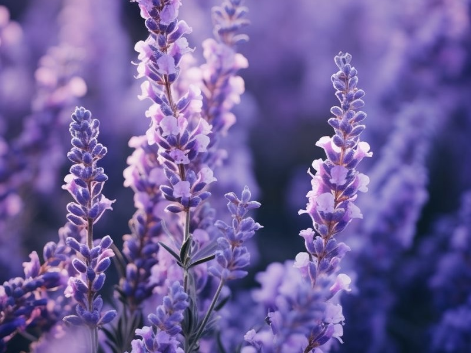
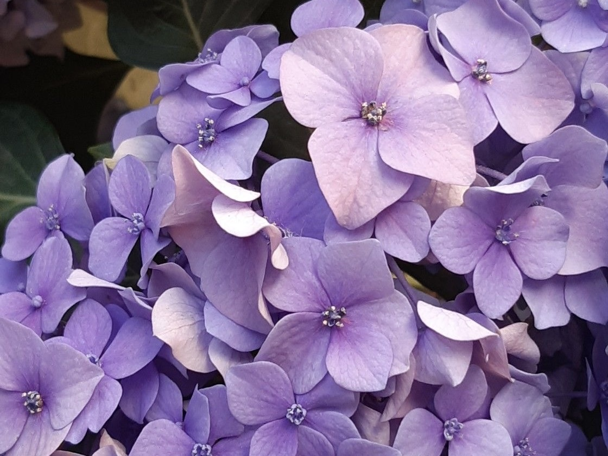
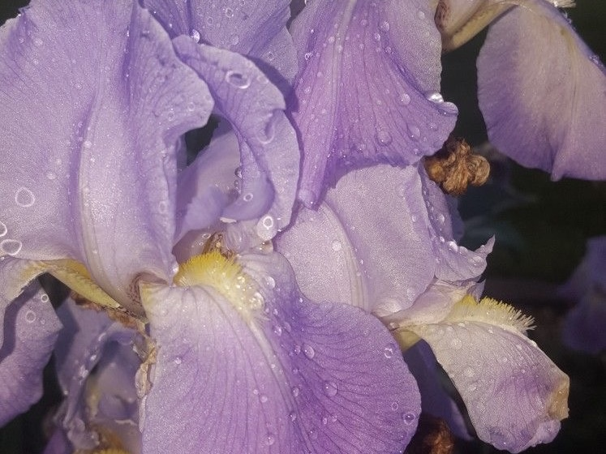
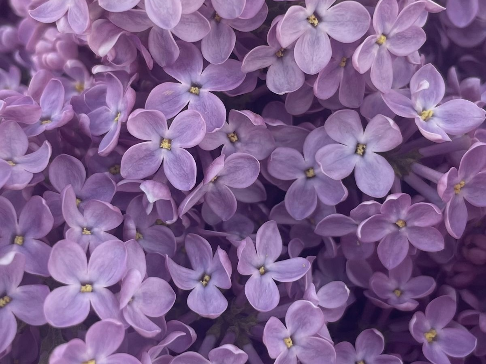

Flowers in Bloom
Discover four beautiful flowers from my garden. Each one has its own colors, character and special meaning. Hover over a flower card to take a closer look.
My Skills

Lavender
A fragrant flower known for its calming properties and beautiful purple hues and symbolizing grace.
Learn More
Hydrangea
A lush flower that blooms in a variety of colors, symbolizing gratitude and heartfelt emotions.
Learn More
Iris
A beautiful flower with a wide range of colors, symbolizing wisdom and hope.
Learn More
Lilac
A fragrant flower that blooms in shades of purple and pink, symbolizing renewal and hope.
Learn More